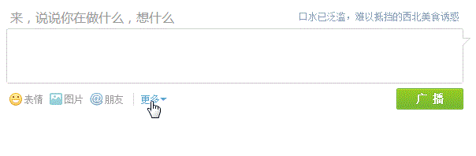

chrome、firefox、360安全浏览器（真不是打广告）、IE7+（IE6没测试，有兴趣的伙伴可以测试一下）
首先我们需要知道的是，页面中闪烁的光标其实就是宽度为0 的选区，也就是说选区的左右边界的重合形成了光标。
在标准浏览器下实现插入话题的效果还是挺简单的，只需要通过textarea节点对象身上的setSelectionRange方法创建一个选区即可，我们可以从MDN网站上面查到该方法的介绍。
The HTMLInputElement.setSelectionRange() method sets the start and end positions of the current text selection in an <input> element.
翻译过来就是：setSelectionRange方法的作用就是在input元素中设置文本选区的开始和结束位置。
使用方式：
inputElement.setSelectionRange(selectionStart, selectionEnd, [optional] selectionDirection);
selectionStart参数：文本选区的起始位置。下标从0开始
selectionEnd参数：文本选区的结束位置。
selectionDirection参数：范围的选择方向。可选值有"forward"、"backward"、"none"
实现代码如下：
// 获取插入话题按钮 var oInsertTopic = document.getElementById('insertTopic'); // 获取文本框 var oMessage = document.getElementById('message'); // 话题内容 var sTopic = '#输入话题标题#'; oInsertTopic.onclick = function () { // 设置内容 oMessage.value = sTopic; // 文本框获取光标 oMessage.focus(); // 设置文本选区的开始位置和结束位置 oMessage.setSelectionRange(1, 7); }
本以为就这么结束了，BUT！低版本的IE压根就不认识这个方法。好吧，继续寻寻觅觅，皇天不负苦心人，终于找到兼容低版本IE的解决方案。上代码：
var range = oMessage.createTextRange();
range.collapse(true);
range.moveEnd('character', end);
range.moveStart('character', start);
range.select();
createTextRange方法：创建文本选区对象。
collapse方法：合并左右边界。默认情况下，range的左边界为0，右边界为oMessage.value.length。该方法有一个布尔参数默认值为true，如果该参数为true，则将右边界合并到左边界的位置；如果参数为false，则将左边界合并到右边界所在的位置。左右边界重合，则可以显示光标。
moveStart方法：移动左侧边界。需要传入两个参数，第一个参数的可选值有character、word、sentence、textedit。这里我们根据字符进行偏移；第二个参数代表偏移量，正值则往右偏移，负值则往左偏移。
moveEnd方法：移动右侧边界。传入的参数和moveStart方法一样。
select方法：将选区对象包含的内容选中。
注意：当我们使用了collapse方法以后，应先调用moveEnd方法，再调用moveStart方法。这两个方法的顺序不一样，结果不一样哦！
OK!，开始整合代码！
// 获取插入话题按钮 var oInsertTopic = document.getElementById('insertTopic'); // 获取文本框 var oMessage = document.getElementById('message'); // 话题内容 var sTopic = '#输入话题标题#'; oInsertTopic.onclick = function () { // 设置内容 oMessage.value = sTopic; if(oMessage.setSelectionRange) { // 文本框获取光标 oMessage.focus(); // 设置文本选区的开始位置和结束位置 oMessage.setSelectionRange(1, 7); } else if(oMessage.createTextRange) { // 兼容低版本的IE var range = oMessage.createTextRange(); range.collapse(true); range.moveEnd('character', 7); range.moveStart('character', 1); range.select(); } }
到此，我们实现了最基本的插入话题效果！当然腾讯微博的效果比我们这个要复杂一点，比如说：#输入话题标题#这句话如果已经存在，则不应该插入新的语句，而是应该选中已存在的语句。再比如说，#输入话题标题#这句话应该插入到用户光标在输入框中的位置。具体功能实现可右键查看源代码！
我把在输入框中常用的四个光标操作（获取光标位置、设置光标位置、获取选区内容、设置选区内容）具体的实现代码封装好了。代码如下：
(function () {
var Cursor = function (el) {
this.el = el;
};
Cursor.prototype = {
constructor: Cursor,
getCursorPosition: function () { // 获取光标位置
var start = 0;
if(document.selection) {
// 获取光标（这句不能少）
this.el.focus();
var range = document.selection.createRange();
// 复制一份
var sr = range.duplicate();
sr.moveToElementText(this.el);
sr.setEndPoint('EndToEnd', range);
start = sr.text.length - range.text.length;
} else if(this.el.selectionStart) {
start = this.el.selectionStart;
}
return start;
},
setCursorPosition: function (pos) { // 设置光标位置
this.setCursorSelectText(pos, pos);
},
setCursorSelectText: function (start, end) { // 设置光标选中文本
// 开始位置支持小于0
if(start < 0) {
start = this.el.value.length + start;
}
// 结束位置支持小于0
if(end < 0) {
end = this.el.value.length + end;
}
// 如果开始位置大于结束位置则交换位置
if(start > end) {
var temp = start;
start = end;
end = temp;
}
if(this.el.setSelectionRange) {
this.el.focus();
this.el.setSelectionRange(start, end);
} else if(this.el.createTextRange) { // 兼容IE
var range = this.el.createTextRange();
range.collapse(true);
range.moveEnd('character', end);
range.moveStart('character', start);
range.select();
}
},
getCursorSelectText: function () { // 获取光标选中文本
var text = '';
if(document.selection) { // 只有IE6-10支持
text = document.selection.createRange().text;
} else {
var start = this.el.selectionStart;
var end = this.el.selectionEnd;
text = this.el.value.substring(start, end);
}
return text;
}
};
// 注册全局变量
window.Cursor = Cursor;
})();
现在可以通过这些代码就可以在输入框中操作光标了。